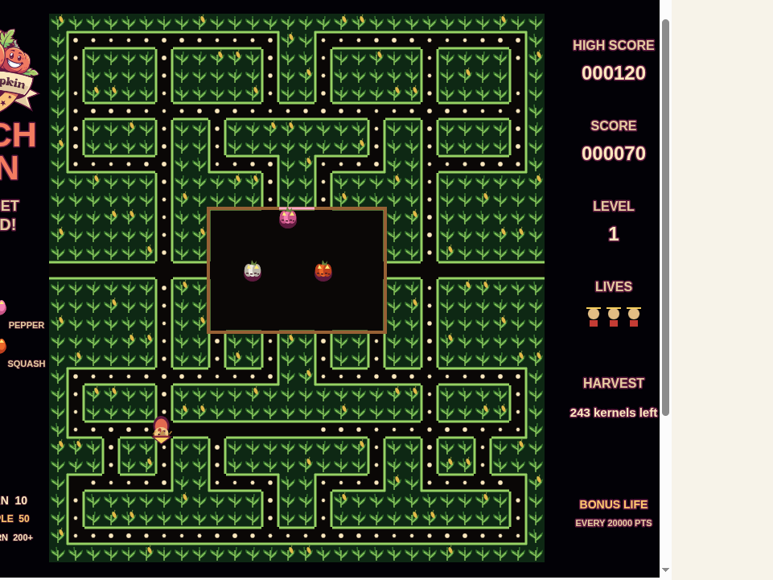

Patchman
Gather every kernel in the mirrored corn maze while four uniquely clever jack-o'-lanterns chase you.
Play PatchmanThe Patch Arcade
Two original patch arcade favorites, brought into your browser with their maze, pumpkin fleets, and vintage arcade screens intact. Free to play on desktop or mobile.